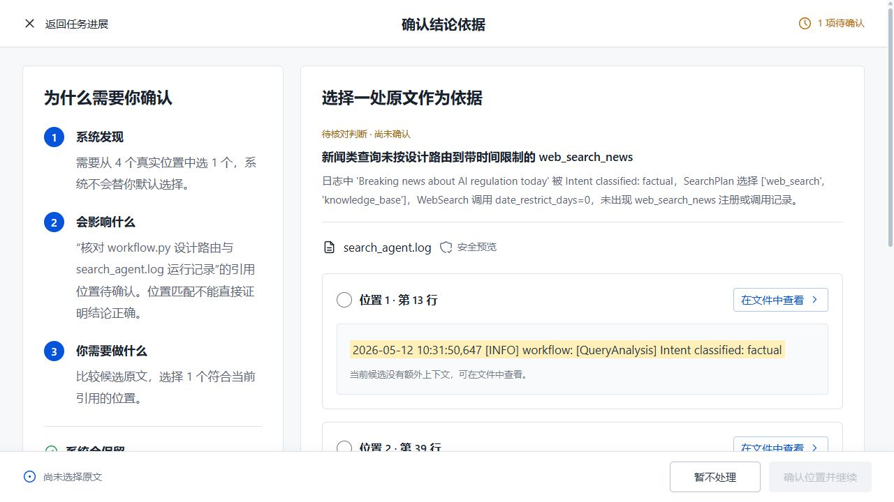
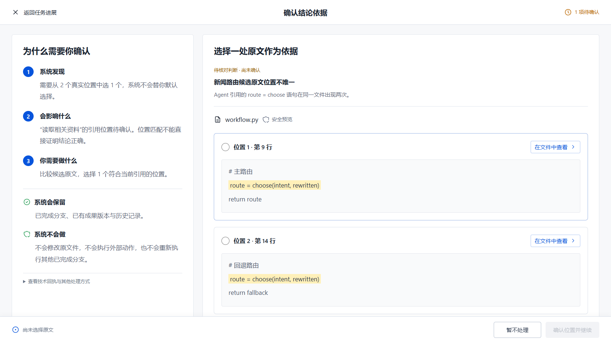
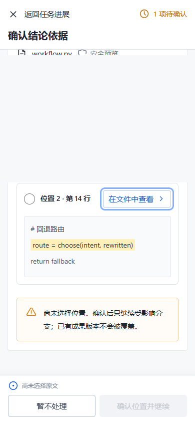
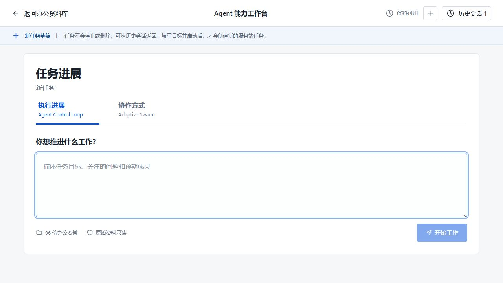
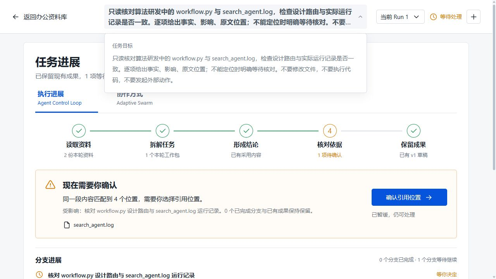

2026-09-11 · 延续原有参考，不重造一套界面
任务目标可展开
页面标题保持紧凑，完整指令随时可读；不会为了阅读重新启动任务。
书写与分支更舒展
完整任务输入区、真实资料范围、按分支数量自适应的结果布局。
确认动作始终可达
候选再长，暂缓和确认也保留在底部；不默认选择，不把预览当批准。
证据核对：从屏幕外到触手可及
在 1280×720 的实际页面中，确认按钮原先位于 y=907–953，修改后位于 y=662–706。控件可见，不代表结论已经正确。

查看用户参考与当前实现


390 px 手机候选页面

新任务：把注意力放回任务本身

完整任务目标展开效果

你可以马上试的 3 个操作
- 打开历史任务，点击顶部任务标题。全文应展开，再点应收起。
- 进入引用确认页，向下查看候选。底部操作应一直可见；只查看原文不能启用确认。
- 切到协作方式，再点新建任务。输入框应聚焦，旧任务和成果应仍在历史。
未修改模型输入覆盖、服务端决策权限或分布式执行能力。已有日志截断问题继续单独验收。
实际验收，不只看截图
最终浏览器回归 96 项通过，其中 94 项覆盖主应用，2 项覆盖新研究库的桌面/移动离线交互。TypeScript、生产构建和 4 项治理检查通过；研究库另有 61 项源码与数据检查。
本轮抓到并修复了确认栏遮住取消按钮、资料库首次点击丢失和规则图说明竖排。查看问题、修复与验证边界。